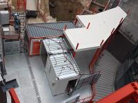

<div class="page" data-name="nouvelle_idee_list">
	<div class="navbar">
		<div class="navbar-bg"></div>
		<div class="navbar-inner sliding">
            <div class="left">
                <a href="#" class="link back">
                <i class="icon icon-back"></i>
                <span class="if-not-md">Back</span>
                </a>
            </div>
			<div class="title">OSIRI - Mes idées</div>
		</div>
	</div>
	<div class="page-content">
        <script id="osiri_nouvelle_idee_list_template" type="text/template7">
            <div class="list media-list">
                <ul>
                    {{#each nouvelle_idee_list}}
                    <li>
                        <a href="/submit_idea_tab/{{ id }}" class="item-content item-link">
                            <div class="item-media"></div>
                            <div class="item-inner">
                                <div class="item-title-row">
                                    <div class="item-title" style="white-space: normal;">{{ nom }}</div>
                                    <div class="item-after"></div>
                                </div>
                                <div class="item-subtitle">{{ date }}</div>
                            </div>
                        </a>
                    </li>
                    {{else}}
                    <li class="item-content">Aucune idée déposée</li>
                    {{/each}}
                </ul>
            </div>
        </script>
		<div id="osiri_nouvelle_idee_list_content"></div>
	</div>
	<script type="text/javascript" ws_script="page">
		ws_engine.register_page("nouvelle_idee_list", ws_page.extend(
		{	
			custom_init: function(page, event, params)
			{
                var self = this;
                
                self.data = {};

                self.set_background_color();

				return self.load_page();
            },
            
            custom_beforein: function(page, event, params)
			{
                var self = this;
                
                self.data = {};

                self.set_background_color();

				return self.load_page();
            },
            
			custom_afterin: function(page, event, params)
			{
                var self = this;
                
                self.data = {};

                self.set_background_color();

				return self.load_page();
			},
			
			load_page: function()
			{
                var self = this;

                return ws_database.nouvelle_idees.all().then(function(result)
                {
                    self.data.nouvelle_idee_list = result;

                    return self.apply_template(page, "osiri_nouvelle_idee_list_template", "osiri_nouvelle_idee_list_content", self.data);
                });
            },

            set_background_color: function()
            {
                var self = this;

                var background_color = osiri_projects.get_phase_color(self.phase);
                $('#osiri_nouvelle_idee_list_content').css('background', background_color);
            }
            
			
		}));
	</script>
</div>
